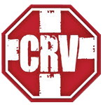
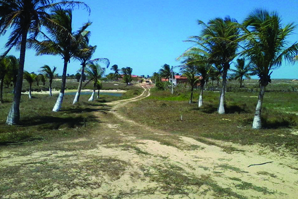
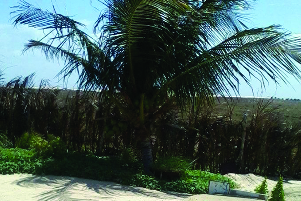
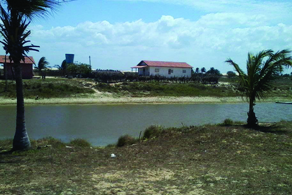
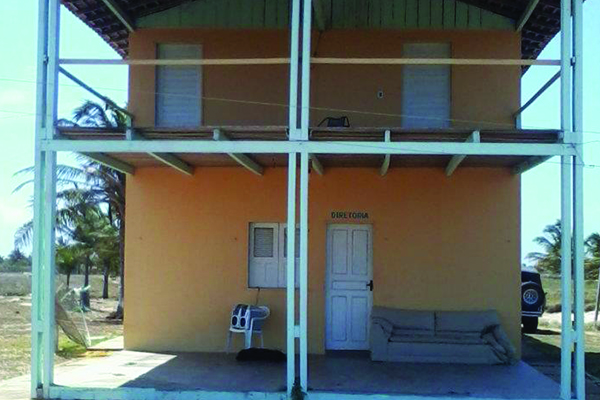
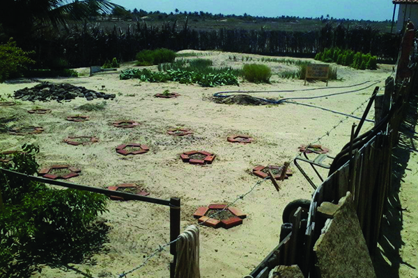
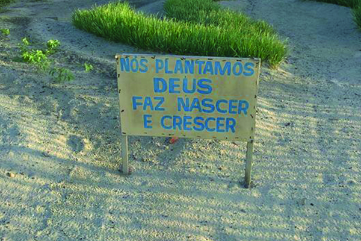
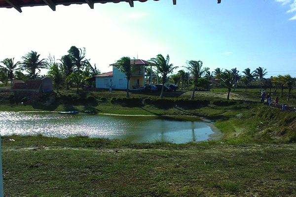
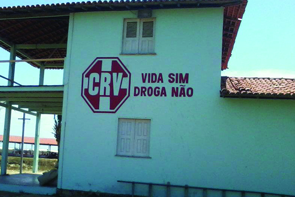
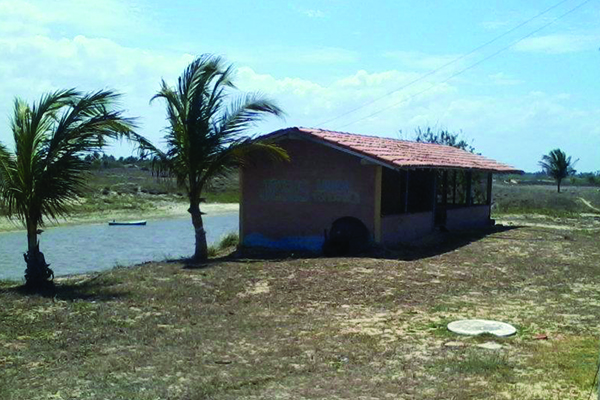

Centro de Restauração
de Vidas
O C.R.V. é administrado pela Associação Batista Johnston, entidade sem fins lucrativos, reconhecida como lei de utilidade Municipal e Estadual, e tem como área de intervenção a família buscando atender as pessoas envolvidas com drogas. Nosso objetivo é contribuir na recuperação de dependentes químicos encaminhados por familiares; instituições, órgãos públicos ou privados, igrejas, para receber atendimento sócio-educativo em regime de internato.



HISTÓRIA
A história do CRV começou em 2004 quando o casal de Missionários Norte-Americanos Pr. Vincent e Sheron Johnston reunia pastores em sua casa para orar e discutir as necessidades da cidade, quando nasceu no coração do casal de Missionários a ideia de ajudar pessoas envolvidas com os vícios. As orações logo se transformaram em ação quando o Pr. Vincent Johnston captou recursos nos Estados Unidos e a propriedade foi adquirida para funcionar uma comunidade Terapêutica. No inicio ficaram à frente da Comunidade o Pr. Vincent e o Pr. Paulo Neto, Missionário da MEAP (Missão Evangélica de Assistência aos Pescadores), uma missão que trabalha com a evangelização de pescadores ao longo do litoral Brasileiro.
Em 2005, sobre a administração da MEAP, o CRV começou a funcionar. Durante os próximos três anos, através de equipes de voluntários Norte Americanos, foram construídos mais três prédios: um dormitório para os homens, uma casa para o zelador/caseiro, e uma oficina para fazer trabalhos de carpintaria e artesanato. Foram perfurados três poços durante este tempo, também. Tendo em vista a necessidade de uma associação para ajudar o CRV com seus objetivos, vários líderes e membros das igrejas batistas da região litorânea do Piauí, e com a cooperação do irmão , Valdir Alcântara que chegou em 2007 com sua esposa Nil para ajudar, fundaram a Associação Batista Johnston em Agosto de 2008. Criada a Associação, foi eleito seu primeiro presidente, o Pr. Francisco José dos Santos (Franzé), que logo tratou de legalizar a instituição para que a mesma pudesse fazer convenio com instâncias governamentais.
O Pr. Franzé, da Igreja Batista Boa Esperança, assumiu a direção da entidade, criando uma Associação Estatutária que levou o sobrenome do casal fundador, sendo registrada como ASSOCIAÇÃO BATISTA JOHNSTON, uma associação civil, de caráter social, de direito privado, sem fins lucrativos, com autonomia administrativa e financeira, que se rege por estatuto próprio e pela legislação especifica pertinente às associações, reconhecida pelo Município de Parnaíba como Utilidade Pública Municipal pela Lei No 2.526 de 10 de Dezembro de 2009 e inscrita no Conselho Municipal de Assistência Social com o No 085/10, e, também reconhecida pelo Governo do Estado do Piauí como Lei de Utilidade Publica Estadual pela Lei no 6.118 de 11 de Outubro de 2011, esta, publicada no diário oficial do Estado com o no 193 em 11 de Outubro de 2011, tendo como área de intervenção a família, buscando atender com prioridade o desenvolvimento de programas de prevenção, tratamento e acompanhamento de pessoas em situação de risco, envolvidas com álcool e drogas através do projeto CRV – Centro de Restauração de Vidas. O CRV também se propõe a trabalhar com a prevenção, através de palestras que ajudem os jovens e adolescentes a se prevenirem contras as drogas. Apesar do pouco tempo de historia, a comunidade tem mudado a historia de vida de muita gente que passou pelo tratamento e hoje estão felizes com suas famílias, voltaram ao mercado de trabalho e recuperam sua cidadania.
Hoje contamos com parceiros como a Prefeitura Municipal de Parnaíba, Mesa-Brasil, Policia Militar do Piauí, Convenção Batista Piauiense, além de Igrejas e pessoas em particular. Precisar ainda de muitos outros parceiros neste trabalho de combate a este que pode ser consideram o mal do século. As igrejas estão convidas para ser coparticipantes conosco, enviando pessoas para tratamento, adotando um aluno (interno) ou doando alimentos, objetos, eletrodomésticos, informática, ou mesmo oferta em dinheiro a ser depositada.
Soli Deo gloria
Pr. Francisco José dos Santos – Presidente
DOAÇÕES
Façam as suas doações para o C.R.V, podem ser alimentos ou valores em dinheiro depositados diretamente em nossa conta corrente.
Conta Corrente da Instituição
Banco do Brasil- Banco do Brasil
Associação Batista Johnston,
ag. 3137-2
c.c. 16.774-6
Que Deus abençoe sua vida!